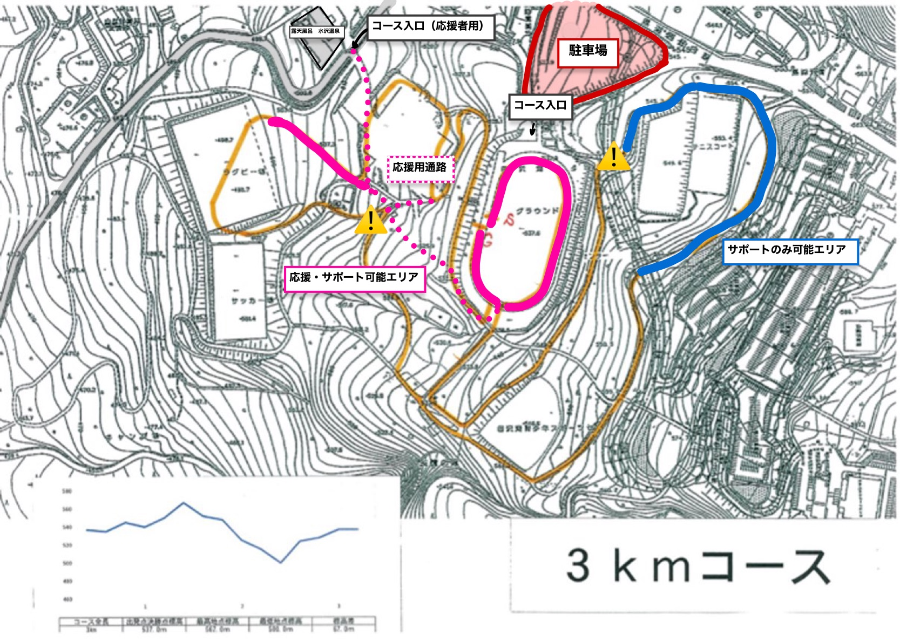

全競技共通
- 今大会は全日本スキー連盟競技規則に従って大会を開催いたします。
- 全日本スキー連盟の規則に則りフッ素ワックスの使用は禁止とします。
- コリドーはゴール手前に3本用意します。
- 非公式リザルトはSEIKOスポーツリンクにて速報を確認できます。またゴール横の公式掲示板にも掲示があります。
- 公式リザルトは準備が整い次第、当日中にはHPにアップします。
ロング・ショート競技
- 男子15kmは5kmコース×3周、女子5kmは5kmコース×1周を使用します。
- 男子9kmは3kmコース×3周、女子3kmは3kmコース×1周を使用します。
- スタートはインターバルスタートによって行い、各インターバルは30秒です。
- インターバルスタートの合図は口頭、又ははっきり聞き取れる電子音で行います。
スプリント競技
- 男女ともに1kmコース×1周を使用します。
- 男子について
- 予選では上位30名が準々決勝に進出します。
- 準々決勝では1ブロックあたり6名を5ブロック行い、各ブロック上位2名ずつと全ブロックの3位以下の選手内でのタイム順が1,2位だった者が準決勝進出となります。
- 準決勝は1ブロックあたり6名を2ブロック行い、各ブロック上位3名ずつが決勝進出となります。
- 決勝は6名で行い、最終順位はこのブロックで決定します。なお6位以下の順位決定戦は行いません。
- 女子について
- 予選では上位12名が準決勝に進出します。
- 準決勝は1ブロックあたり6名を2ブロック行い、各ブロック上位3名ずつが決勝進出となります。
- 決勝は6名で行い、最終順位はこのブロックで決定します。なお6位以下の順位決定戦は行いません。
- 予選のタイム順でビブを再度割り振ります。予選以降のラウンドは変更後のビブで行いますので注意してください。
- 予選のスタートはインターバルスタートによって行い、各インターバルは15秒です。
- インターバルスタートの合図は口頭、又ははっきり聞き取れる電子音で行います。
- 予選のスタートはフリースケーティング走法で行います。
- 予選以降ラウンドのスタートはマススタートによって行います。
- 予選以降ラウンドのスタートには15mのカッターが6レーン用意されています。その区間の走法はダブルポールとします。
- 予選以降のラウンドのスタート位置（レーン）は、前ラウンドのタイムが早い順に中央から指定します。
係員が誘導いたしますので指示に従ってください。
- 予選以降ラウンドの組分け表、非公式リザルトはゴール横の公式掲示板に掲示がありますのでご確認ください。
リレー競技
- 男子リレーは2.5kmコース×2周、女子リレーは2.5kmコース×1周を使用します。
- A戦は男子4名で1チーム、女子3名で1チームとし、各大学男女1チームずつまでとなります。
- B戦は男女各3名で1チームとし、同一出走者が連続して滑走しても構いません。
- B戦では滑走時の服装やパフォーマンスを自由としますが、犯罪行為や公序良俗に反することは禁止します。
またアルペン板でコースを滑走することを禁止します。
- スタートはマススタートによって行います。
- スタートは3列矢じり型のスタートとなります。詳しくは下記の図をご覧ください。
使用コース
使用コース及び周回数は以下の通りです。
- 男子9km3kmコース×3周
- 男子15km5kmコース×3周
- 女子3km3kmコース×1周
- 女子5km5kmコース×1周
- 男女スプリント1kmコース×1周
- 男子A選リレー2.5kmコース×2周×4人
- 女子A選リレー・B選リレー2.5kmコース×1周×3人
コースマップ


応援・サポートについて


- 原則コース内に選手以外が立ち入ることは禁止されておりますが、応援やサポートのためにコースの一部を立入可能としています。
- 注意マークがある箇所は、特にスピードのついた状態で選手が下ってくるため大変危険です。
絶対にコースに立入らないようにしてください。
- コースに立ち入る際には、なるべく端を歩きコースを荒らさないよう十分留意してください。
また選手の往来がないことをよく確認してから、コースを横断するようにしてください。
- サポート可能エリアでは、道具が破損した際に代わりの道具を選手に受け渡すことができます。
- 応援・サポート可能エリアは、特に人数制限等は設けません。
- サポートのみ可能エリアは、コースが狭く混雑することが予想されるため、1エリアにつき各大学2名までとさせていただきます。
- テントエリアの場所は限られておりますので、各大学で譲り合って使用してください。
- テント等を常設することは可能ですが、風で飛ばされないようにきちんと地面と固定するように工夫してください。
ゴミなどはきちんと持ち帰るようにお願いいたします。
- テント設置や場所取りのためにコースオープン前に競技場に入ることは可能ですが、決してコース内には立ち入らないようにしてください。
- 競技場や駐車場の詳しい場所についてはアクセスマップをご覧ください。
- 駐車スペースに限りがありますので、各大学なるべく最小限の台数でご来場ください。